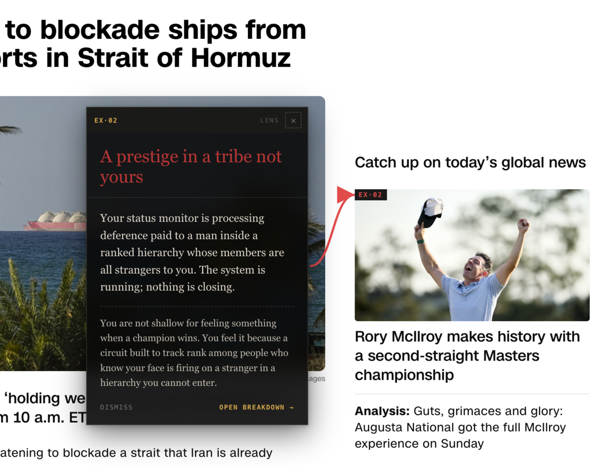

Demismatch · Full Vision · April 2026
Vol. I · № 01
Demismatch
You are not broken. You are mismatched. This is the shape of the project that follows from that — one specification at the spine, two classes of work radiating outward.
For Machines
AI Alignment
Humans as ground truth
For Humans
Reality Tools
Software that shows an organism what it's actually looking at — and what to do about it
a.1
MCP server
Inference-time alignment via tool-use. Any LLM calls Cor at inference and reads mechanism, foundation, convergence, and resolution-condition data for the context at hand.
- Form
- MCP (Model Context Protocol) server · tool-call surface for any LLM
- Targets
- Inference-time alignment across any mechanism Cor specifies
- Proxy
- Preference-only alignment — RLHF responses that maximize user preference without asking whether the response creates resolution or just activates the mechanism
- Real input
- Cor-specified resolution conditions per mechanism: "this request engages M3; resolution requires reciprocal human co-regulation, not generic preference-shaped completion"
a.2
Vector steering
Activation engineering against mismatch. Steering vectors learned from Cor-grounded contrastive pairs push generation toward mechanism-aware completions at the activation level.
- Form
- Steering vectors learned from Cor-grounded contrastive pairs · applied at inference
- Targets
- Activation-level alignment — per-mechanism guardrails where prompts alone are unreliable (e.g. DA9 AI-attachment-slot prohibition enforced at activation, not just prompt)
- Proxy
- Post-hoc RLHF reward shaping and constitutional filters — operate on preferences not mechanisms, jailbreakable
- Real input
- Steering vectors keyed to Cor mechanisms. When an activation reads "this output is a proxy for M3," generation gets pushed toward a matched-state alternative
a.3
Training data curation
Align at the source, not the surface. Pretraining and fine-tuning corpora filtered and re-weighted against Cor's mechanism architecture, with synthetic data generated from mechanism narratives and resolution conditions.
- Form
- Pretraining / fine-tuning corpus filter + re-weighting · synthetic data from Cor narratives
- Targets
- The training distribution itself — fixes the problem at the source; every AI inherits its model of humans from training data
- Proxy
- Broad internet scrape + preference-annotated fine-tuning — bakes mismatch into the base model before alignment work begins
- Real input
- A corpus where the Cor specification is ground truth: mechanism outputs, resolution conditions, evolved needs — not the preference-output artifacts modern environments happen to produce
a.4
Small models from scratch
Domain models with no preference contamination. Purpose-built small models trained from scratch on Cor-grounded corpora, for tasks where ground-truth-aligned outputs matter more than general capability.
- Form
- Purpose-built small models · trained from scratch on Cor-grounded corpora
- Targets
- Specialized applications — clinical triage, educational scaffolding, environment-design assistants, therapy-adjacent tools — where hallucination about human needs is catastrophic
- Proxy
- Fine-tuned general-purpose models with RLHF layers on top — inherit the base model's preference-as-ground-truth mistake; RLHF cannot fully correct what pretraining installed
- Real input
- A model whose entire learned distribution is Cor-grounded from pretraining forward — no preference contamination to overcome later
a.5
Evals and constitutions
Benchmarks grounded in what humans actually need. Cor-mechanism benchmarks plus new constitutional frameworks that replace preference-derived rules with mechanism-derived ones.
- Form
- Benchmarks grounded in Cor mechanisms, convergences, resolution conditions · constitutions encoding resolution as constraint
- Targets
- Every model evaluation surface — current benchmarks grade "did this satisfy user preference?" and miss the core question of resolution vs activation
- Proxy
- MT-Bench, HELM, Arena, and preference-derived benchmarks · constitutional AI frameworks that bake preference assumptions into the rules
- Real input
- The matched/mismatched fourth evaluation axis (per A1) alongside helpful/harmless/honest · per-mechanism benchmarks · constitutions encoding resolution conditions as constraints
… and more
— The Spine —
Cor
The human specification
Answers:
- What do humans need? (foundations)
- How do those needs operate? (mechanisms)
- Where does mismatch occur? (diagnosis)
- What repairs it? (intervention)
A synthesis of literature, new research, and empirical evidence. Everything downstream is grounded here.
Self-extendingresearch
Peer-reviewedrigor
Openinfrastructure
17Foundations
15Mechanisms14 + R1 Touch
14Convergences
101Academic works
573Extractions
14Gaps
63Researchers
22Domains
10Empirical demos
8Applications
All counts from the current proof-of-concept atlas.
c.1
Decode Talk
Situation in, evolutionary read out. Not a companion, not advice — the mechanism story behind what you're feeling. → Sample exchanges
- Form
- Chat — web, grounded in the Cor spec
- Targets
- Any mechanism relevant to a described situation
- Proxy
- Emotional advice, reassurance, "companion" dynamics
- Real input
- The mechanism story — what's firing, why, and what it was built for
c.2
 Decode Camera
Real-world HUD. Point it at a scene — get mechanism, proxy, mismatch, named on the image.
Decode Camera
Real-world HUD. Point it at a scene — get mechanism, proxy, mismatch, named on the image.
- Form
- Scene HUD — image upload, live camera in progress
- Targets
- Any mechanism firing in a visual scene
- Proxy
- Hyperstimulus pattern when present; named "MATCHED" when real
- Real input
- What the organism is actually reading the scene as
c.3
Decode Web
Browser extension. Every page annotated: mechanism hijacked, proxy sold, real need imitated.

- Form
- Chrome extension · v0.4.2
- Targets
- Any mechanism, per page element
- Proxy
- Manufactured status, threat, urgency, or intimacy
- Real input
- The resolution condition the mechanism evolved to process
c.4
 Adaptor — Phase 2
Once you can see mismatch, the next question is what to build instead. Adaptor is the research program designing technology that satisfies human mechanisms at their real condition, rather than fake the signal. → Research directions
Adaptor — Phase 2
Once you can see mismatch, the next question is what to build instead. Adaptor is the research program designing technology that satisfies human mechanisms at their real condition, rather than fake the signal. → Research directions
- Form
- Research program · not a shipping product
- Targets
- Mechanisms whose resolution conditions current tech fakes rather than meets
- Proxy
- "Touch grass" retreats, digital-detox products, anti-tech framing
- Real input
- Technology-delivered conditions the mechanism actually evolved to process
… and more